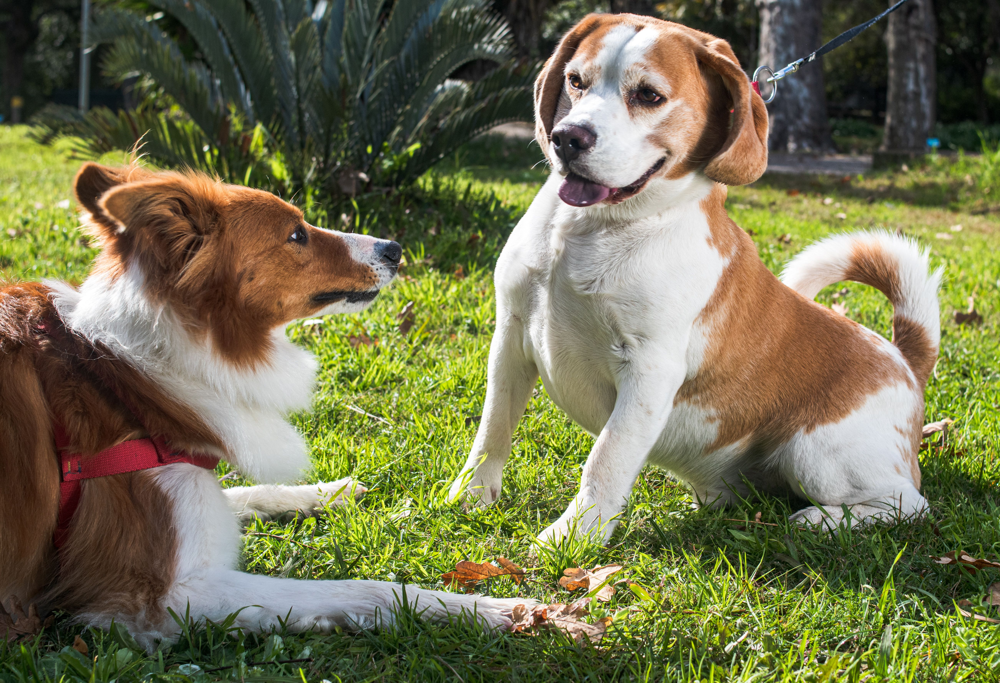
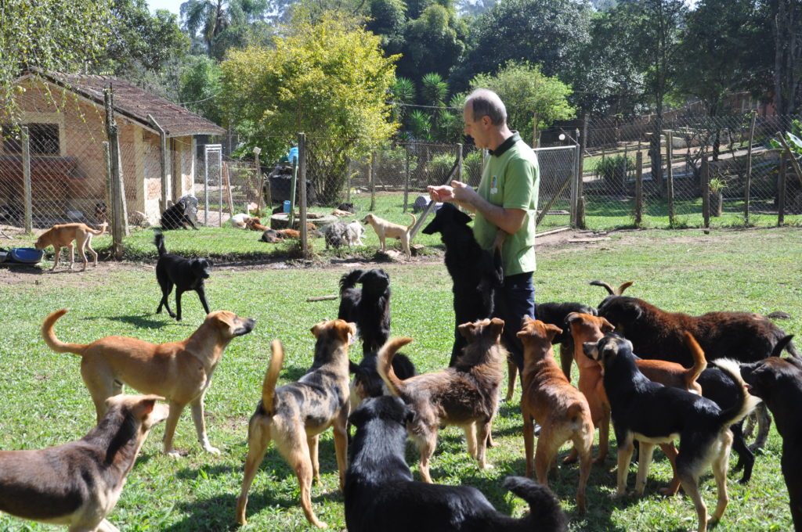
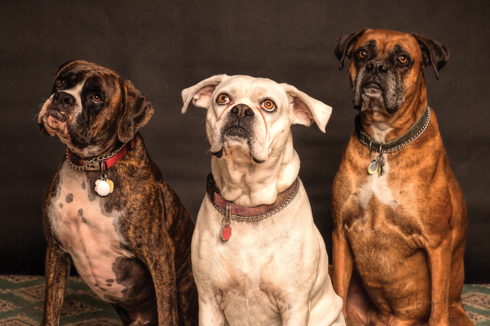

Resgatar
Acolhemos cães e gatos em situação de risco, abandono e maus-tratos.
Resgatar. Cuidar. Recomeçar.
Para quem já viveu nas ruas, um pouco de cuidado muda tudo. A gente resgata, acolhe e ajuda cães e gatos a escrever uma nova história.
Desde 2015, do lado de quem precisa.

Uma causa, muitas formas de ajudar Adote com responsabilidade Todo cuidado faz diferença

O Instituto
O Instituto Vira-Lata nasceu em 2015 da vontade de não ficar parado diante do abandono e dos maus-tratos. Somos uma organização dedicada a proteger cães e gatos e oferecer uma nova oportunidade de viver com segurança e carinho.
Cada animal tem seu tempo. Aqui, recebe atendimento veterinário, alimentação e cuidado até estar pronto para encontrar uma família.
Esse trabalho acontece com a ajuda de voluntários, doadores e parceiros. Além dos resgates, acreditamos na conscientização sobre a castração, a adoção responsável e o combate ao abandono. Adotar, doar ou divulgar essa causa são maneiras de fazer parte dela.
Como fazemos a diferença
O resgate é só o início. Estar presente em cada etapa é o que transforma a vida de um animal.
Acolhemos cães e gatos em situação de risco, abandono e maus-tratos.
Atendimento veterinário, vacinas e medicamentos para recuperar a saúde.
Alimento, abrigo e paciência para aprender a confiar nas pessoas outra vez.
Com a adoção responsável, começa uma nova vida ao lado de uma família.
Nossa trajetoria
Alguns dos resgates que fazem parte da história do Instituto e lembram por que esse trabalho precisa continuar.

04 / Faça parte
Sua contribuição ajuda a manter os cuidados de todos os dias: ração, medicamentos e um lugar seguro para recomeçar.
Uma ajuda que se soma a muitas outras para manter o acolhimento.
Quero contribuirMais apoio para medicamentos e curativos durante a recuperação.
Quero contribuirUma contribuição para a alimentação e os cuidados dos resgatados.
Quero contribuirMais cuidado desde os primeiros atendimentos de um animal.
Quero contribuirToda ajuda é bem-vinda
Você também pode contribuir por Pix.
Página acadêmica: os dados de doação são ilustrativos. Para doar de verdade, confirme os dados nos canais oficiais da instituição.
Chave ilustrativa: 545-454-555-44
Os valores acima são sugestões de contribuição..png)
Espalhe essa ideia
Compartilhe a importância da adoção responsável, converse sobre o abandono e acompanhe o trabalho de quem protege os animais. A ajuda também começa assim.
Amigo Vira-Lata · Uma comunidade pela proteção animal.